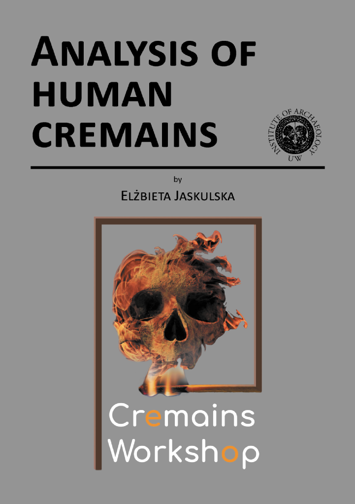

Course manual
We are proud to present the latest and the first officially published (open access) edition of "Analysis of Human Cremains" by Elżbieta Jaskulska. It is a manual for analysis of human cremated remains with an introduction to the coding system and digital forms developed in the Department of Bioarchaeology, Institute of Archaeology, University of Warsaw, Poland. The manual has been prepared as a teaching aid for participants of the Cremains Workshop — a two-week course of theory and practice of analysing of human cremains, which takes place every summer at the Institute of ArchaeologyUniversity of Warsaw, Poland. During the course, the theoretical background, as well as hands-on analysis are introduced, therefore the "Analysis of human Cremains" is meant as strictly laboratory manual.
All participants will receive printed version of the manual
